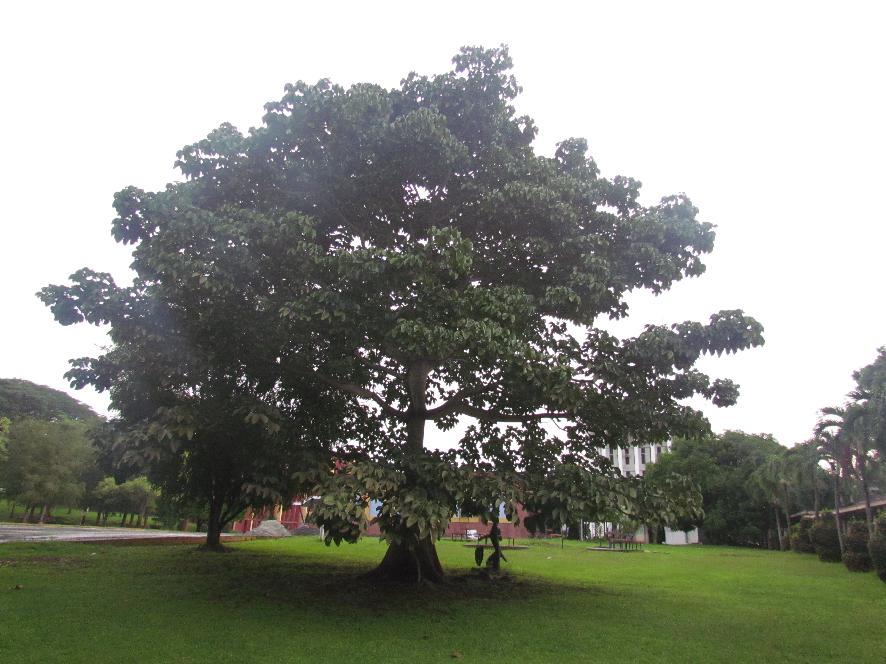
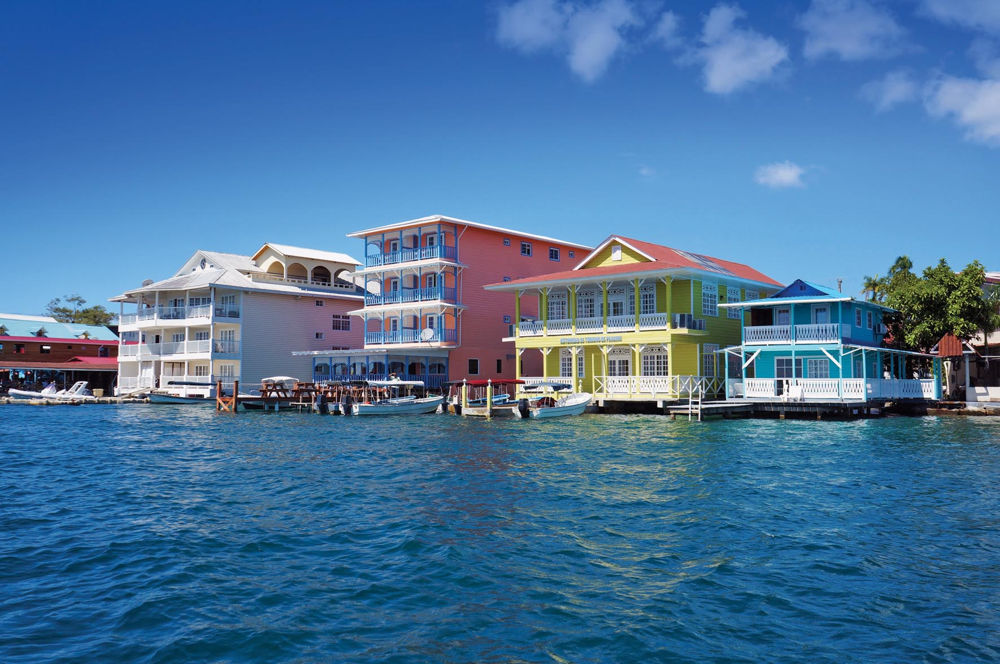

|
Historia
|
La historia de Panamá ha sido ampliamente influenciada por la posición estratégica de este istmo estrecho que une América del Norte con América del Sur y que separa el océano Pacífico del océano Atlántico. Los Cunas, los Chocos y los Guaymis fueron algunas de las tribus indígenas que han ocupado la región. Aún cuando estas civilizaciones no fueron tan avanzadas como la de los Mayas o los Incas, puede que hayan sufrido la influencia de ellas. El explorador Rodrigo de Bastidas desembarcó sobre el territorio en 1501 y, al año siguiente, Cristóbal Colón reivindicó Panamá en nombre de España. |
|
Simbolos
|
| Bandera Nacional |
Flor Nacional |
Ave Nacional |
Árbol Nacional |

|

|

|

|
| Bandera de Panamá |
La orquídea Peristeria elata |
El águila arpía |
El Árbol Panamá |
|
|
Extensión Territorial
|
75,517 km2
|
|
Provincias
|
- Panamá
- Bocas del Toro
- Chiriquí
- Coclé
- Colón
- Darién
- Herrera
- Los Santos
- Panamá Oeste
- Veraguas
- Emberá-Wounaan
- Guna Yala
- Ngöbe Buglé
|
|
Lugares Turisticos
|
| Canal de Panamá |
Bocas del Toro |

|

|
|